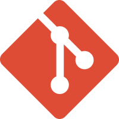
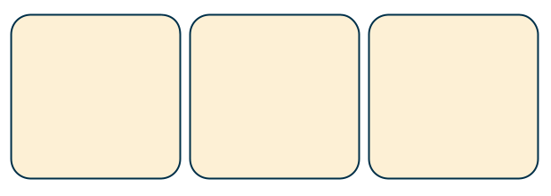
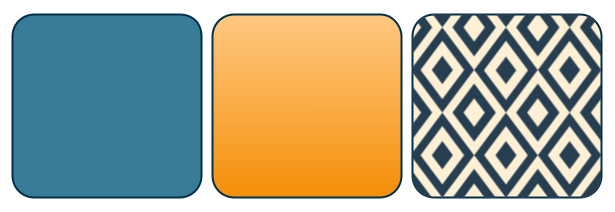

Nesta seção está o conteúdo aprendido no terceiro módulo do curso de HTML5 e CSS3. Com seus principais conceitos e aplicações práticas.
Conteúdo das Aulas
Capítulo 18
Git e GitHub
O Git é entendido como um software de gerenciamento de versões dentro do próprio computador do usuário (repositório local). Trata-se portanto, de uma ferramenta de versionamento de código, ou seja, muitas versões de uma mesma coisa. Já o GitHub é o repositório remoto que permite o compartilhamento dos repositórios locais. É nele que é possível armazenar e compartilhar outros repositórios. O GitHub também serve como uma rede social para programadores fazer o compartilhamento seus códigos remotamente. É importante destacar que o GitHub permite o armazenamento de todas as linguagens de programação.

Capítulo 19
Imagens de fundo no background
Quando queremos utilizar uma imagem para o plano de fundo do nosso site, utilizaremos a propriedade (em CSS, por se tratar de uma configuração de estilo e não uma configuração semântica) background-image;.
Veja o exemplo a seguir:
<body>
<div class="quadrado" id="q1"></div>
<div class="quadrado" id="q2"></div>
<div class="quadrado" id="q3"></div>
</body>
div.quadrado {
display: inline-block;
margin: 5px;
width: 300px;
height: 300px;
background-color: #fdf0d5;
border: 2px solid #003049;
border-radius: 20px;
}
Resultando no navegador o seguinte:
Nota:
Observe que a propriedade display: inline-block permitiu que os quatro quadrados ficassem alinhados lado a lado no navegador.
Para adicionarmos configurações individuais para cada quadrado gerado no código acima, utilizaremos os id="" para cada um. De forma geral, temos 3 maneiras simples de fazer o preenchimento de uma caixa em HTML, cor sólida - degradê ou imagem de fundo.
div.q1 {
background-color: #377b97ff;
}
div.q2 {
background-image: linear-gradient (to bottom, #fec57b, #fb9904ff);
}
div.q3 {
background-image: url('imagens/pattern.png');
}

Explorando o background-image
Por padrão, quando a imagem de fundo é menor do que o tamanho da caixa, esta imagem será repetida nos dois eixos do navegador (x,y) quantas vezes for necessário para cobrir a extensão da caixa contêiner. É possível alterar esse comportamento utilizando a propriedade background-repeat
O background-repeat aceita os seguintes valores: repeat; - no-repeat; - repeat-x; - repeat-y;. Veja como cada um deles se comportam na imagem abaixo.
Além das propriedades e valores para o background-repeat, também é possível fazer alterações na posição de referência de início das repetições, o que chamamos de ancoragem. Por padrão, as imagens de fundo ficam ancoradas no canto superior esquerdo (left top) da página. Através da propriedade background-position podemos obter outras oito formas de ancoragem. É importante dizer que estes pontos de ancoragem serão feitos sempre na ordem de colunas e linhas.
Além de ser possível determinar o ponto de ancoragem da imagem do background de um site, podemos também redimensioná-la. Por padrão, não há nenhum redimensionamento predefinido, portanto a imagem usada será aplicada em seu tamanho original. Para fazermos configurações personalizadas do tamanho, utilizamos a propriedade background-size, que aceita os seguintes valores:
Auto: é a configuração padrão, a imagem de fundo será aplicada em seu tamanho original
[length] px e [length]%: redimensiona a largura da imagem e faz a altura se adaptar automaticamente
cover: altera o tamanho da imagem para que ela seja exibida na tela sem nenhum corte
contain: redimensiona a imagem para que ela cubra o container, mesmo que para isso seja necessário cortes